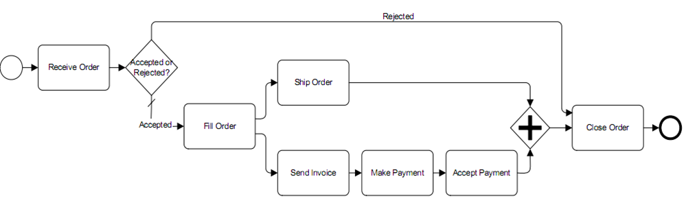

|
It is a group of logically related tasks that are performed for achieving business results.
Below you can see an example of a business process:

What is BPM (Business Process Management)?
It is a method focused on continuously managing and optimizing an organization’s activities and business processes, including management practices and policies and control processes and metrics, as well as software tools that support all such activities.
|